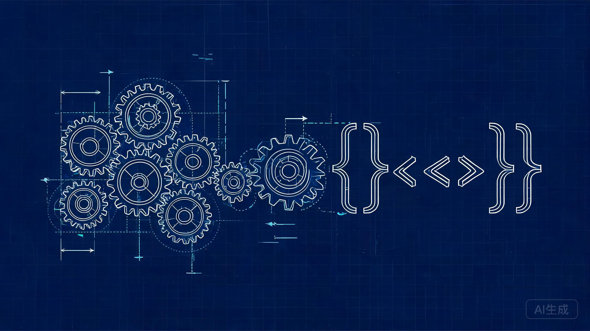

写给可能不太自信、也不太确定未来方向的你们：为什么我建议你从大一就开始学编程。
Chapter 1 · 先说说我自己
一个机构参数的作业，手算要一整夜。
我试着用 Python 写了段小程序——
算了整夜的数据，3 秒出了结果。
那一刻我意识到：代码不是计算机专业的专利，
是每个机械生都该有的扳手。
Chapter 1 · 破除刻板印象
Chapter 1 · 数据说话
AI 工程师 · 平均月薪
2026 年一季度招聘市场数据，新质生产力行业需求明显活跃（新华网）
应届起薪 · 长三角
智能制造方向 8–12K / 月，传统机械 6–9K / 月（2026 应届）
全球工业软件市场
2025 年已突破 6800 亿美元，中国市场增速显著高于全球，人才缺口持续扩大
结论：机械不是天坑，是正在被重新定价的硬核赛道——缺的不是岗位，是"加料"的人。
Chapter 2 · 趋势一
在 Autodesk Fusion、西门子 NX、nTopology 里，输入约束条件，AI 自动生成几十个候选结构并排序——设计从"画图"变成"提问"。
物理信息神经网络做仿真，精度达到传统有限元的 95%+，耗时只要 1%。等一晚的仿真结果，现在喝杯咖啡就出来。
routine 计算、CAD 清理、公差检查、写文档……初级工程师的大量日常，AI 已经能完成一大半。会被替代的是"只会点鼠标"的人。
Chapter 2 · 趋势二
中望 CAD、华天正向设计平台等加速追赶，"AI+CAD 重构工业软件生态"——国产替代浪潮需要大量既懂机械又懂软件的工程师。
智能产线、工业机器人、数字孪生从概念变成标配，工业大数据分析、仿真工程师等新岗位持续扩招。
"数字中国" + "智能制造"双重加持，新质生产力行业招聘需求明显活跃——风向已经很明显了。
这批新岗位要的不是纯程序员，而是 懂机械、懂工艺、还会写代码的复合人才。
稀缺的不是程序员，
是懂机械还会写代码的你。
纯程序员一抓一大把，但懂机构、懂工艺、又有工程直觉的代码人才凤毛麟角。
编程不是让你转码——是给你的专业装上涡轮，你的机械知识正是别人抢不走的部分。
Chapter 3 · 拆掉心理障碍
真相一 · 起跑线相同
大一的大家编程都是零基础，没有谁天生会写代码。
真相二 · Python 对机械生最友好
语法像英语，专注解决问题本身，一周就能写出小工具。
真相三 · AI 是一对一私教
报错直接问 AI，秒回讲解。2026 年学编程不再拼天赋，拼的是"问对问题"。
真相四 · 你已有隐藏优势
画图课、力学课训练出的空间思维和工程直觉，恰是纯程序员最缺的东西。
Chapter 3 · 他们已经在做了
CASE 01
学长实习时用脚本自动出图 + 自动标注，一天干完别人一周的活儿，被主管点名留用。
CASE 02
同学用 MATLAB 做步态控制仿真，拿下竞赛国奖，保研面试时被老师追着问。
CASE 03
网友给自己的打印机写了温度控制算法，打印质量飙升，小工具卖了四位数。
共同点：没有一个转码，全是用代码放大机械专业的本事。
Chapter 4 · 具体怎么做
原则：跟课设绑定、用中学，不需要额外挤时间，也不需要熬夜。
Chapter 4 · 本周就能跑
# gear_calc.py —— 齿轮参数速算小工具
import math
m = float(input("模数 m = "))
z = int(input("齿数 z = "))
d = m * z # 分度圆直径
da = d + 2 * m # 齿顶圆直径
df = d - 2.5 * m # 齿根圆直径
p = math.pi * m # 齿距
print(f"分度圆直径 d = {d:.2f} mm")
print(f"齿顶圆直径 da = {da:.2f} mm")
print(f"齿根圆直径 df = {df:.2f} mm")
print(f"齿距 p = {p:.3f} mm")
不需要看懂每一行，今晚先跑起来。
Chapter 4 · 全部免费
任何一个 AI 助手都能当你的编程家教：报错贴给它，秒回讲解 + 修改建议。不会就问，问到会为止。
Python 官方中文教程、机械工程 Python 案例集（参数计算 / 仿真数据处理 / 自动出图），搜"机械 Python"就能找到一堆。
数学建模大赛、机器人队、智能制造实验室——找个组织一起学，进度快三倍，还能攒下作品和人脉。
机械给你扎根的土壤，
代码给你乘风的风。
不自信没关系，方向不明也没关系——今天开始，你比昨天的自己多了一项外挂。
接下来是自由提问时间。
也可以会后找我聊：要不要转专业？要不要考研？女生适合走这条路吗？——这些问题我们一个一个来。